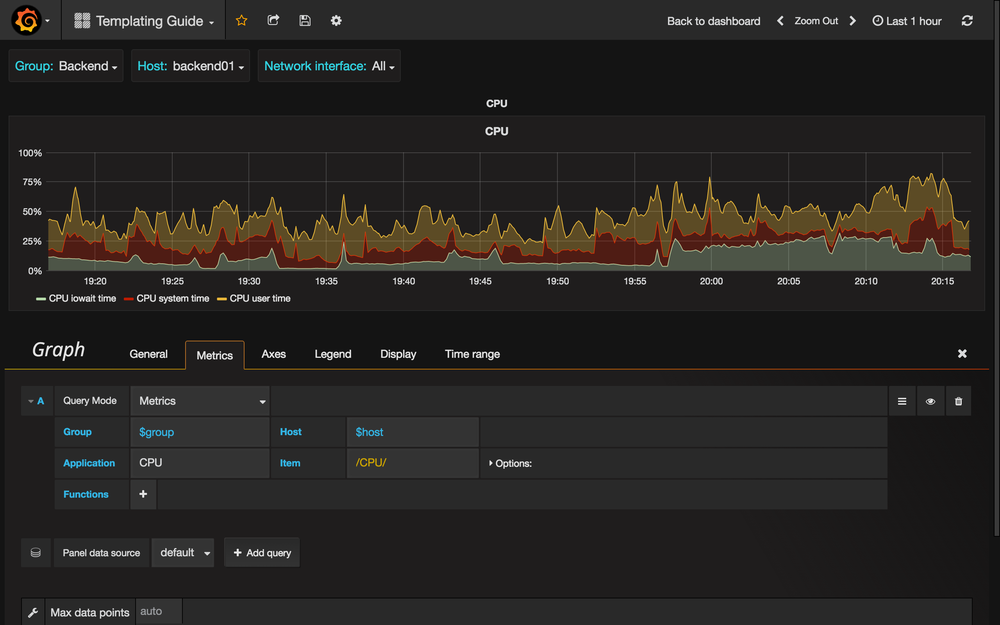

Templating Guide
You can use template variables for creating highly reusable and interactive dashboards. General idea of templating is allow Grafana to get different metrics from data source and provide a way to change it on the fly without modifying dashboard. In case of Zabbix it means that you can get list of Host Groups, Hosts, Applications or Items and add it as a variables.
Creating Variable
To create template variable click the cog icon on the top navigation bar and choose Templating.

When you click New button, you'll see template variable editor. It contains these sections:

Variable
Name
Name of the variable. You should use this name in queries.
Label
Visible label for variable. Use when you want to display different name on dashboard. For instance, Host Group instead host_group.
Type
By default Query type is selected. It means that Grafana asks data source for values of variable. But there are some other types: Interval (just a time interval), Data source (You can switch data source, for example, if you have more than one Zabbix instance and each added into Grafana as data source), Custom (you can set any predefined values for variable) and Constant.
Query Options
Data source
Data source used for querying variable values.
Refresh
When to update the values of this variable.
Query
Query string.
Regex
Use regex if you need to filter values or extract a part of value.
Selection Options
Multi-value
Enable, if you want to select multiple values at the same time.
Value groups/tags (Experimental feature)
Query Format
Template variable query in Zabbix data source is a string which contains 4 parts wrapped in braces ({}). You still can
use a period (.), but it's deprecated and will be removed in future.
{host group}{host}{application}{item name}
For example,
{Zabbix servers}{Zabbix server}{CPU}{*}
{Frontend}{web01.mydomain.com}{*}{*}
Each part can be a name of corresponding metric or *, which means all metrics.
Examples:
{*}returns list of all available Host Groups{*}{*}all hosts in Zabbix{Network}{*}returns all hosts in group Network{Linux servers}{*}{*}returns all applications from hosts in Linux servers group{Linux servers}{backend01}{CPU}{*}returns all items from backend01 belonging to CPU application.
You can use another variable as a part of query. For instance, you have variable group, which returns list of host groups and want to use it for querying hosts in selected group only. Here's a query for this case:
{$group}{*}
Variables Usage
When you create a variable, you can use it as a part of data source query. Grafana also supports variables in different places like panel's and row's titles, Text panel's content, etc.

Note, that you should add
$sign before variable's name ($host for host variable).
See more about templating in Grafana docs